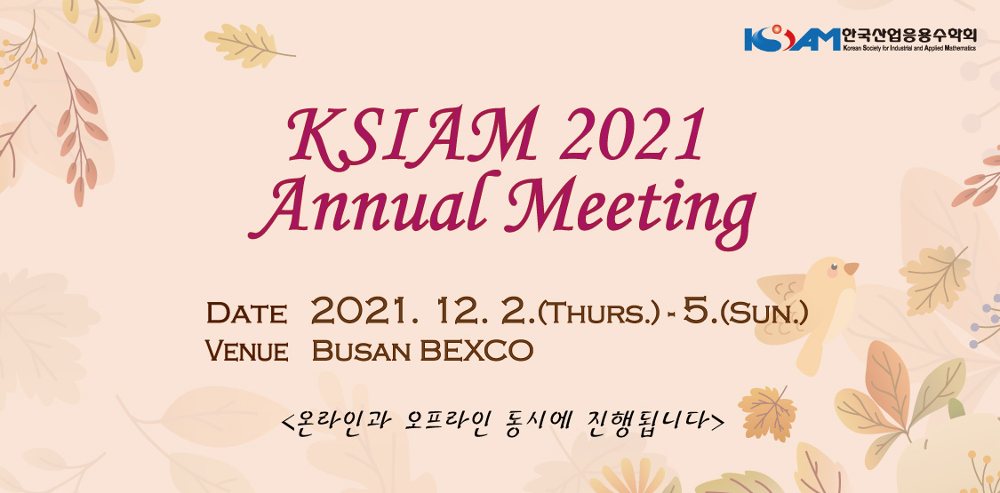

Overview: 대학원 입학 후, 첫 학회 참석
대학원 입학 후, 처음으로 학회를 참석했다. 아는 것이 많지 않다 보니 다양한 발표를 들어도 생소한 용어 투성에다가 잘 이해가 되지 않았고 어렵기만 했다. 그래도 언젠가는 도움이 되겠지 하면서 나름대로 이해를 하려고 노력했다. 가장 크게 느낀 점은 “수학은 매우 중요하다”였다. 나도 수학을 전공했지만 수학을 공부한다는 것은 너무 어렵고 힘든 것 같다… 하지만 내가 좋아하는 인공지능을 공부하기 위해선 선형대수, 통계 등 수학적 지식이 필수니 더 열심히 공부해야겠다고 많이 생각을 했다. 다음 학회 때는 한 층 더 발전한 나를 기대한다.